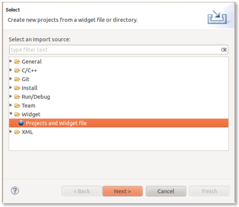
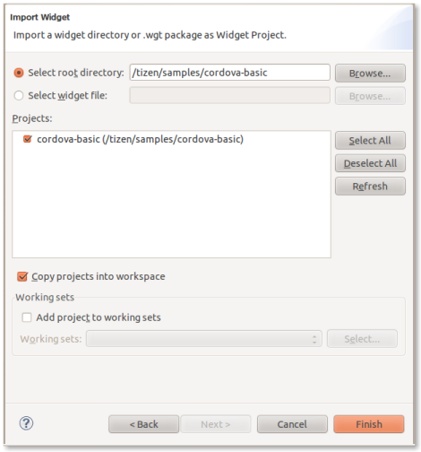
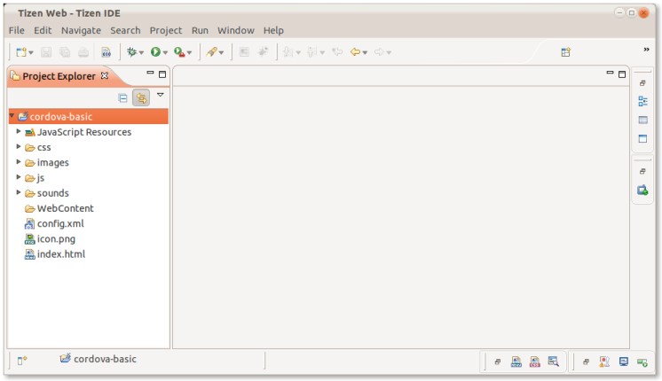
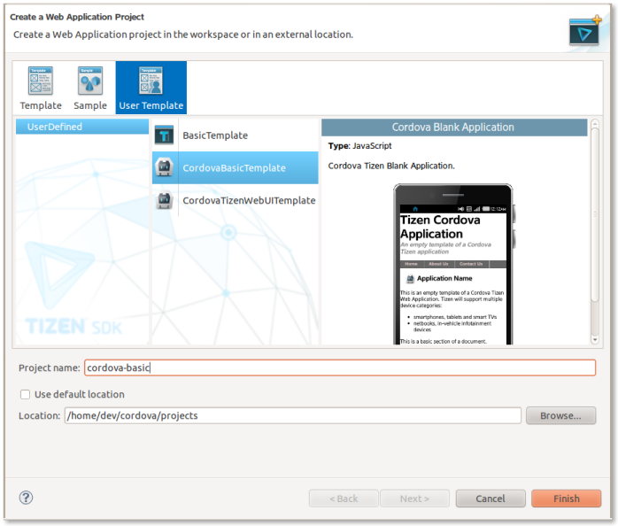
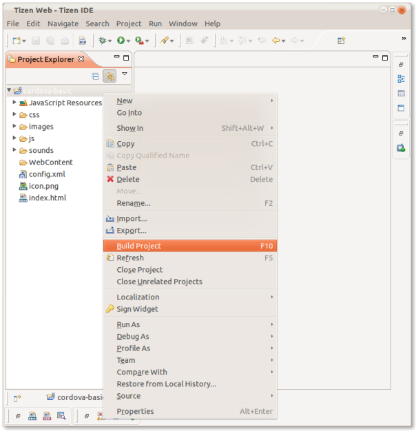
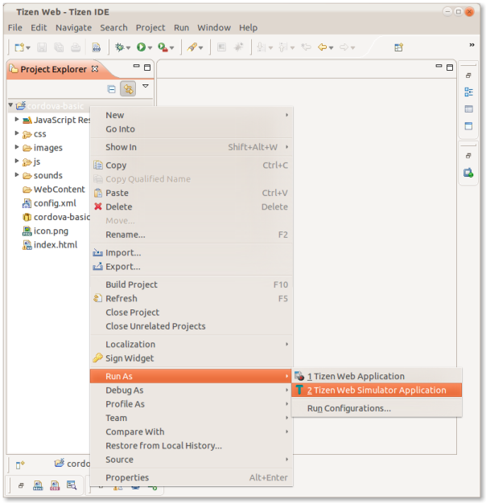
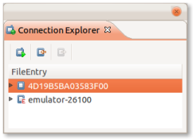
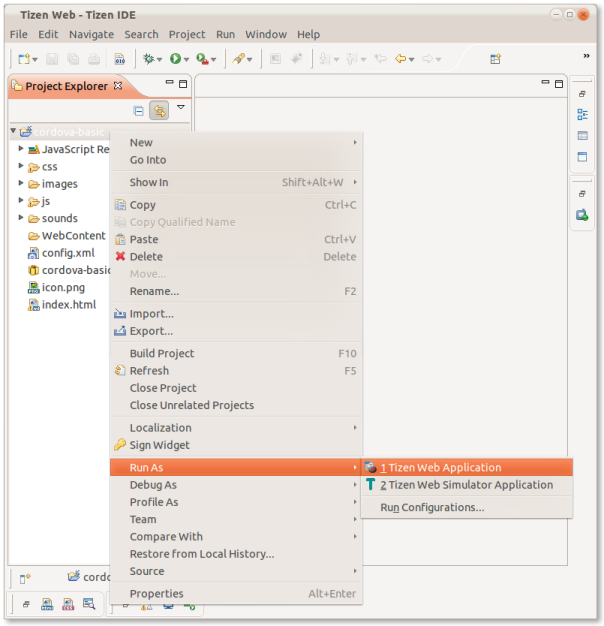

Getting Started with Tizen
This guide describes how to set up your development environment for Cordova and run a sample application. Note that Cordova used to be called PhoneGap, so some of the sites still use the old PhoneGap name.
1. Requirements
- Linux Ubuntu 10.04/10.10/11.04/11.10 32-bit, Windows XP SP3/7 32-bit.
2. Install SDK + Cordova
- Download and install the Tizen SDK.
- Download the latest copy of [PhoneGap and extract its contents. We will be working with the tizen directory.
- (optional) Install Tizen Cordova template projects: copy the
/templatesdirectory content into you Tizen Eclipse IDE web templates directory (e.g:/home/my_username/tizen-sdk/IDE/Templates/web).
3. Setup New Project
-
Method #1: Import a Cordova Tizen project sample
- Launch Tizen Eclipse IDE
- Select File -> Import -> Tizen Web Project

- Click Next
- Make sure that Select root directory is checked
- Make sure Copy projects into workspace is checked
- Click Browse
- Browse to one of the Cordova Tizen "samples" project directory (e.g:
/cordova-basic) and select it

- Click Finish

- Your project should now have been imported and appear Project Explorer view
-
Method #2: Use Tizen Eclipse IDE Cordova Tizen project templates
- Launch Tizen Eclipse IDE
- Select File -> New -> Tizen Web Project
- Select User Template and User defined items
- Select one of the Tizen Cordova template (e.g: CordovaBasicTemplate)
- Fill-up the Project name and its target Location

- Click Finish
- Your project should now have been created and appear Project Explorer view
4. Hello World
-
To build your project:
- Right Click your project in the Project Explorer view and Select Build Project

A widget package should have been generated in your project root directory (e.g:
cordova-basic.wgt)Note that the provided samples Tizen Cordova projects are not basic hello world applications. They contain a simple example usage of the Battery Cordova API.
5A. Deploy to Simulator
-
Right Click your project in the Project Explorer view and Select Run As and Tizen Web Simulator Application

5B. Deploy to Device/Emulator
- Make sure that your target device is properly launched/connected/configured ("Date and Time" settings must have been set correctly)
-
Select your application deployment target with the Connection Explorer view (Select Window Menu -> Show View -> Connection Explorer )

-
Right Click your project in the Project Explorer view and Select Run As and Tizen Web Application
